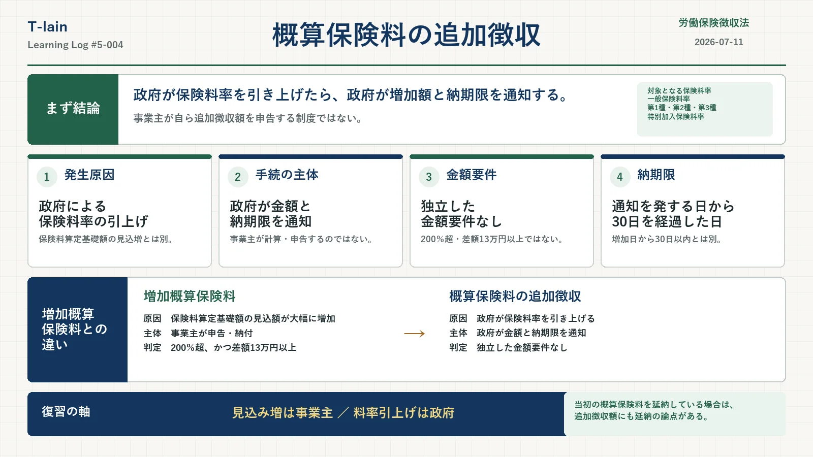

今日のテーマ
労働保険徴収法における、概算保険料の追加徴収。
名前だけを見ると「増加概算保険料」と似ているけれど、誰が動く制度なのか、何をきっかけに発生するのかが違う。今回は、その境目を中心に整理した。
まず結論
政府が一般保険料率または特別加入保険料率を引き上げたときは、政府が増加分を追加徴収し、事業主へ追加徴収額と納期限を通知する。
- 原因は、政府による保険料率の引上げ
- 追加徴収額を計算して通知するのは政府
- 13万円以上などの独立した金額要件はない
- 納期限は、通知を発する日から起算して30日を経過した日
- 増加概算保険料とは、発生原因と手続の主体が異なる
概算保険料の追加徴収とは
政府が、一般保険料率、第一種特別加入保険料率、第二種特別加入保険料率または第三種特別加入保険料率を引き上げたときに、その引上げによって増えた労働保険料を追加して徴収する制度。
根拠は労働保険徴収法17条1項。事業主側で労働者数や賃金総額が増えたことを直接の理由とする制度ではなく、政府による保険料率の引上げが出発点になる。
対象になる4つの保険料率
| 対象 | 追加徴収との関係 |
|---|---|
| 一般保険料率 | 引上げによる一般保険料の増加分を追加徴収する |
| 第一種特別加入保険料率 | 引上げによる第一種特別加入保険料の増加分を追加徴収する |
| 第二種特別加入保険料率 | 引上げによる第二種特別加入保険料の増加分を追加徴収する |
| 第三種特別加入保険料率 | 引上げによる第三種特別加入保険料の増加分を追加徴収する |
金額要件はない
概算保険料の追加徴収には、「差額が13万円以上」といった独立した金額要件は置かれていない。
徴収法17条と施行規則26条は、保険料率の引上げによる増加額を追加徴収すること、その増加額と納期限を通知することを定めている。増加概算保険料のような200％超・13万円以上という判定はしない。
政府が金額と納期限を通知する
事業主が自ら追加徴収額を申告するのではない。政府が事業主に対し、納付すべき労働保険料の額と期限を通知する。
施行規則26条では、所轄都道府県労働局歳入徴収官が次の事項を通知するとされている。
- 保険料率の引上げによる労働保険料の増加額
- 増加額の算定の基礎となる事項
- 納期限
納期限は通知から30日
納期限は、政府が通知を発する日から起算して30日を経過した日と定められる。
ここでは、増加概算保険料の「増加した日から30日以内」と混同しないことが大切。追加徴収では、政府が発する通知を基準に納期限が定められる。
増加概算保険料との違い
| 比較 | 増加概算保険料 | 概算保険料の追加徴収 |
|---|---|---|
| 主な原因 | 保険料算定基礎額の見込額の大幅な増加 | 政府による保険料率の引上げ |
| 手続の主体 | 事業主が申告・納付 | 政府が金額と納期限を通知 |
| 金額要件 | 通常は200％超、かつ差額13万円以上 | 独立した金額要件なし |
| 期限の基準 | 増加した日から30日以内 | 通知を発する日から30日を経過した日 |
片保険から両保険になる場合は別
ここが混乱しやすい。
労災保険のみ、または雇用保険のみが成立している事業が、労災保険と雇用保険の両方が成立する事業になった場合、一般保険料率は変わる。しかし、これは政府が保険料率そのものを引き上げる徴収法17条の追加徴収ではない。
この場合は徴収法附則5条により、増加概算保険料の規定が準用される。事業主が申告・納付する側になる。
判定も通常の増加概算保険料とは比較対象が異なる。変更後の一般保険料率で算定した概算保険料が、すでに納付した概算保険料の200％を超え、かつ、その差額が13万円以上であることを見る。
追加徴収額にも延納の論点がある
徴収法18条は、徴収法15条から17条までの規定により納付すべき労働保険料について、事業主の申請に基づく延納を認めている。
施行規則31条は、増加概算保険料の延納方法を定める施行規則30条を、保険料率の引上げによる追加徴収額の延納にも準用している。
- 当初の概算保険料を延納していることが前提
- 追加徴収の通知で指定された期限までに延納を申請する
- 保険料率が引き上げられた日以後の残りの期に分けて納付する
- 最初の期分は、通知で指定された期限までに納付する
「政府が通知する制度だから延納できない」と決めつけないようにしたい。
翌年度の確定精算まで待つわけではない
政府が保険料率を引き上げた場合、その増加分を翌年度の確定保険料で初めて精算するわけではない。政府が追加徴収額と納期限を通知し、事業主は指定された納期限までに納付する。
ここが狙われる
- 追加徴収の原因は、政府による保険料率の引上げ
- 事業主が申告するのではなく、政府が金額と納期限を通知する
- 13万円以上などの独立した金額要件はない
- 納期限は、通知を発する日から起算して30日を経過した日
- 片保険から両保険になる場合は、徴収法附則5条による増加概算保険料の扱い
- 当初の概算保険料を延納していれば、追加徴収額にも延納の論点がある
○×で確認
| 問題 | 答え | 理由 |
|---|---|---|
| 政府が保険料率を引き上げても、翌年度の確定精算まで追加分を納付する必要はない。 | × | 政府が追加徴収額と納期限を通知し、指定された納期限までに納付する。 |
| 概算保険料の追加徴収には、差額13万円以上という要件がある。 | × | 徴収法17条・施行規則26条に、そのような独立した金額要件はない。 |
| 労災保険のみの事業が両保険成立となった場合は、必ず徴収法17条の追加徴収になる。 | × | 徴収法附則5条により、要件を満たせば増加概算保険料の規定が準用される。 |
| 当初の概算保険料を延納している場合、追加徴収額にも延納の論点がある。 | ○ | 徴収法18条・施行規則31条により、追加徴収額の延納が定められている。 |
今日のまとめ
概算保険料の追加徴収は、政府が保険料率を引き上げたときに、その増加分を政府が通知して徴収する制度。
増加概算保険料のように事業主が自ら申告するのではなく、200％超・13万円以上という独立した金額要件もない。納期限は通知を発する日から起算して30日を経過した日になる。
一方、片保険から両保険になる場合は徴収法17条ではなく、附則5条による増加概算保険料の扱い。似た言葉を、原因と手続の主体で切り分けたい。
復習用の一言まとめ
見込みが増えたら事業主が申告。政府が保険料率を上げたら、政府が追加徴収額と納期限を通知する。